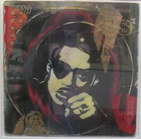

Slick Rick
From The Giant: The Definitive Obey Giant Site

{kind=link}
{kind=link}
From Obeygiant.com:
THE BLACK CLARK GABLE, IF YOU WILL: "Though you pretend to be glory / I'm number one / That's the end of the story." - Slick Rick, "I Own America." Hip-hop has quite a few founding fathers, all of whom do their bit in contributions, some more so than others. But there's only a few who can make guzzling an entire six-pack of Colt .45 look suave. Not that Slick Rick necessarily would prefer a brown bagged 40 of the old Colt, but in the days before Cristal and Sean John ("It's not a brand, it's a lifestyle!"), he was the Renaissance man, the master storyteller. Hailing from London and originally known as Doug E. Fresh's vocal partner in the Get Fresh Crew, he changed his name to Slick Rick from MC Ricky D--and with it, came the debonair, the poignant, and the downright nasty. Which is why hanging a print on your wall of this man is acceptably cool...definitely NOT because he was found guilty of second-degree attempted murder of his cousin in 1991.
From Wikipedia:
Slick Rick, also known as Ricky D and The Ruler (born January 14, 1965), is a British rapper, known most for a series of hip hop recordings during the 1980s. Born Richard Walters in South Wimbledon, London, United Kingdom, he was blinded in the right eye by broken glass as an infant and took to wearing an eyepatch from an early age. Rick moved with his family to The Bronx in 1975.
Charlie Rock of Harlem World crew was instrumental in bringing Slick Rick and Doug E. Fresh together when Doug requested an introduction after he had seen him win local MC battle contests. It was at an MC contest at the 369 Armory on 142nd street in Harlem, given by promotion partners Ray Chandler & Charlie Rock, The Rick & Doug were formally introduced by Rock.
As a 20-year-old in the summer of 1985 he scored his first big hits, "La Di Da Di" and "The Show."
Slick Rick released The Great Adventures of Slick Rick in 1988 while living in New York City. "Children's Story," which appears on The Great Adventures of Slick Rick, is one of the most famous songs in rap and hip-hop and has been covered by Black Star (comprised of Mos Def and Talib Kweli), Black Rob, Everlast, Tricky's side project Nearly God, UK rapper Ramson Badbones, Bjork, and Japanese rapper Zeebra. The album attained platinum status, but Rick was unable to exploit this due to an arrest for attempted murder. He shot his cousin and a bystander, accusing his cousin of extorting money. Russell Simmons, head of Def Jam records, bailed him out and Rick quickly recorded The Ruler's Back before spending five years in prison. "La Di Da Di," "Mona Lisa," and "Children's Story" are among his best known songs, with "La Di Da Di" being covered nearly word-for-word by Snoop Dogg on his 1993 album Doggystyle, and lines from "La Di Da Di" being borrowed for the chorus of Notorious B.I.G. song "Hypnotize" on his 1997 album Life After Death.
When Rick was released in 1994, he immediately recorded Behind Bars. On May 25, 1999, Slick Rick released his fourth album entitled The Art of Storytelling on the Def Jam label. The album featured Nas, OutKast, Raekwon from the Wu-Tang Clan, Snoop Dogg, Kid Capri, Canibus, and Doug E. Fresh. In June 2002, after performing on a Caribbean cruise ship, Rick was arrested by the then INS as he re-entered the United States through Florida. He was promptly told that he was being deported because he is a British citizen; since he had been born in London and moved to the States as a youth. In 1996, a law was passed which called for foreigners convicted of violent felonies to be deported, a ruling which was more vigorously enforced amid heightened security concerns after the September 11, 2001 attacks. Rick was continuously refused bail, but after 17 months in prison he was released on November 7, 2003.
His fifth album, The Adventure Continues, is slated to drop in 2006.
Slick Rick was given the Obey treatment in 2004 with Shepard's release of Slick Rick Red and Slick Rick Blue as part of the Rappers print set. Slick Rick has also been the subject of fine art pieces.
|  |
{kind=link}
{kind=link}
{kind=link}